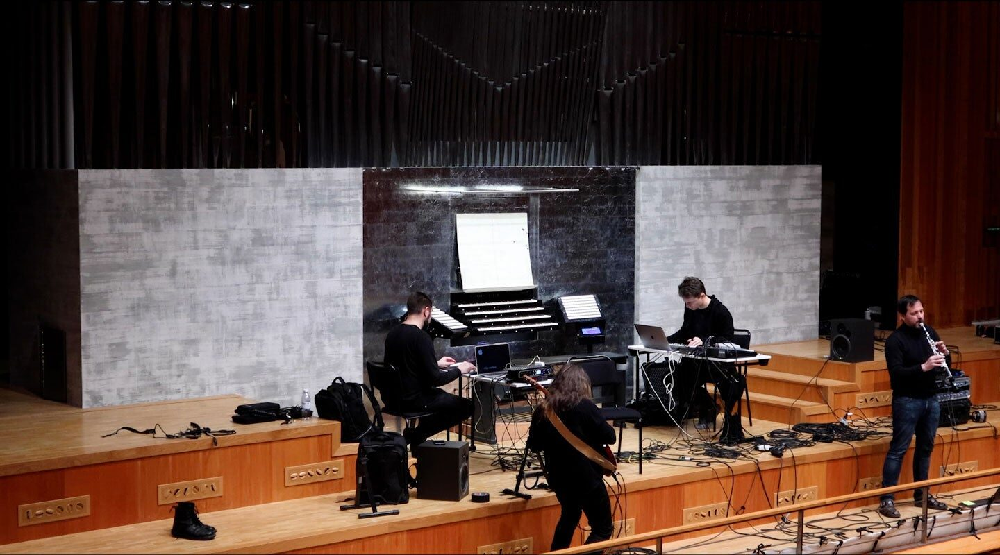
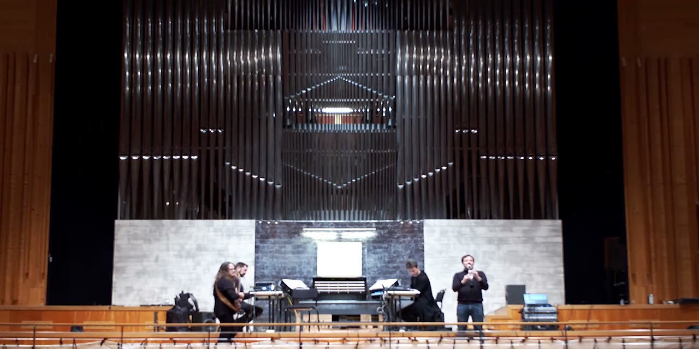

The TCP/Indeterminate Place Quartet: a Global Hyperorgan Scenario
PROJECT DESCRIPTION
The TCP/Indeterminate Place quartet presents a telematic performance in which two concert hall pipe organs, in two different locations in Europe, are controlled remotely using a series of different techniques. The four performers are located at the KTH R1 Experimental Performance Space in Stockholm, controlling the Skandia Organ, while also remotely controlling the Utopa Baroque Organ at Orgelpark, Amsterdam. The performance for NIME 2021 further develops approaches tested in the embedded video below. A fundamental point of departure for the quartet is a widened conception of modularity as a way of designing interaction between human and non-human agents. Through telematic means, the group has applied this concept within the Global Hyperorgan project [1]. The quartet made its first performance in January 2021, connecting two large pipe organs in Piteå, Sweden, and Amsterdam, the Netherlands. This constituted the first “scenario” of the Global Hyperorgan project: that is, one of the possible configurations involving Hyperorgans, distant spaces, and co-performers connected via a network.
The Global Hyperorgan is an intercontinental, creative space for acoustic musicking. Existing pipe organs around the world are networked for real-time, geographically-distant performance, with performers utilizing instruments and other input devices to collaborate musically through the voices of the pipes in each location. In the submitted video, we observe how the modular system utilized in this performance afforded multiple experiences of shared instrumentality from which new, synthetic voices emerge. Our aim with the proposed performance is to further explore the potential in such forms of interaction. As a long-term technological, artistic and social research project, the Global Hyperorgan offers a platform for exploring technology, agency, voice, and intersubjectivity in hyper-acoustic telematic musicking.
TCP, in the name of the quartet, refers to the combination of Telepresence and Copresence, in the neologism Tele-Copresence, as an expression of our central interest in sense of presence in musical interactions enabled by telematic performance. By Indeterminate Place, we refer to the experience of place in tele-copresence as sometimes characterised by a mediated, liminal space. The Global Hyperorgan contributes a particular potential for exploration of concert spaces that carry particular acoustic affordances, as well as socio-historical characteristics. In tele-copresence, these are at times molded together in Indeterminate Place. Tangentially, TCP/IP is the foundational protocol stack of the Internet.
PROGRAM NOTES
This performance with the TCP/Indeterminate Place quartet activates a telematic connection in which two concert hall pipe organs, in two different locations in Europe, are controlled remotely. It is a realization of a new scenario in the Global Hyperorgan project, in which the quartet is divided in two duos, situated in different locations. Such interactions are emblematic of the intersections of the technical, artistic and social aspects at the heart of the Global Hyperorgan and illustrative of the thick and pervasive mediating dynamics endemic to all musicking. Global Hyperorgan participants are compelled to develop new models of instrumentality for new modes of musicking. TCP, in the name of the quartet, refers to the combination of Telepresence and Copresence, in the neologism Tele-Copresence, as an expression of our central interest in the sense of presence in musical interactions enabled by telematic performance. By Indeterminate Place, we refer to the experience of place in tele-copresence as sometimes characterised by a mediated, liminal space. The Global Hyperorgan contributes a particular potential for exploration of concert spaces that carry particular acoustic affordances, as well as socio-historical characteristics. In tele-copresence, these are at times molded together in Indeterminate Place.
PERFORMANCE REQUIREMENTS
The proposed telematic performance will be streamed live from Europe, and should be projected to the audience on-location at NIME on a large screen with a high-quality stereo sound system, matching the size of the venue.
High-bandwidth Internet connection is required for the live-streaming. Audio and Video should not be compressed on the receiving side.
For people attending NIME remotely, a live-streaming link will be provided.
The quartet will take care of establishing the connection between the two concert spaces in Europe.
MEDIA


The TCP/Indeterminate Place quartet.
Video of the performance

▶Video of the TCP/Indeterminate Place quartet performance (720p resolution).
Download link of the higher-resolution (1080p) version of the video: https://www.dropbox.com/s/tq9ppgoxc2xjjmd/NIME%20music%20submission%20video.mp4?dl=0
ACKNOWLEDGEMENTS
The authors would like to thank Wouter Snoei and Hans Fidom at Orgelpark in Amsterdam, Johnty Wang at McGill University in Montreal, and Leif Handberg at the KTH R1 Experimental Performance Space in Stockholm.
Citations
- ↩Harlow, R., Petersson, M., Ek, R., Visi, F., & Östersjö, S. (n.d.). Global Hyperorgan: a platform for telematic musicking and research. International Conference on New Interfaces for Musical Expression. Retrieved from https://nime.pubpub.org/pub/a626cbqh